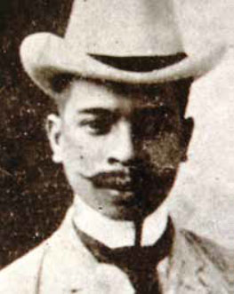

Sino si Lope K. Santos?

(Imahe ay galing sa https://philippineculturaleducation.com.ph/santos-lope-k/)
Noong panahon ng mga Amerikano, naging higit na malaya ang mga manunulat sa pagsulat hinggil sa iba't ibang paksa. Ang pagluluwag ng batas ng sensura ay nagbigay ng pagkakataon ang mga Filipino na makabasa ng iba't ibang uri ng aklat. Si Lope K. Santos ay isa sa mga lumitaw na manunulat ng wikang Tagalog sa panahong Amerikano at ang magiging Ama ng Balarilang Filipino. Isa siyang makata, nobelista, mamamahayag, lider manggagawa at lingkod publiko. Siya ang gumawa ng unang opisyal na libro para ituro ang wikang pambansa.
Talambuhay
Ipinanganak si Lope Santos y Canseco noong ika-25 ng Setyembre taong 1879 sa Pasig na noo'y sakop pa ng lalawigan ng Rizal. Anak siya nina Ladislao Santos at Victoria Canseco (nang lumaon, babaybayin ni Santos ang Canseco gamit ang titik K). Maagang natuto si Santos ng pag-iimprenta sa kaniyang amang nagtatrabaho sa isang imprenta. Nakapagtapos siya ng pag-aaral sa Escuela Normal Superior de Maestros at sa Escuela de Derecho sa Maynila at natamo ang kaniyang batsilyer sa sining mula sa Colegio Filipino. Napangasawa niya si Simeona Salazar.
Noong 1900, nagsimula si Santos bilang peryodista sa iba't ibang diyaryo hanggang maging editor ng Muling Pagsilang, Lipang Kalabaw, at iba pa. Nakapagsulat si Santos ng sampung tomo ng mga tula. Isa rin siyang kritiko ng panitikan. Malaki rin ang naging ambag ni Santos sa pagtataguyod ng wikang pambansa. Naging direktor siya ng Surian ng Wikang Pambansa (pagkatapos siyang hirangin ni dating Pangulong Manuel L. Quezon) at awtor ng Balarila ng Wikang Pambansa na naging opisyal na teksbuk sa pagtuturo ng wikang Tagalog. Maliban sa Ama ng Balarilang Filipino, kabilang sa mga katawagang nagbibigay parangal kay Santos ang pagiging Paham ng Wika at Haligi ng Panitikang Filipino. Kilala rin siya sa karaniwang palayaw na Mang Openg.
Naging aktibo rin si Santos sa politika. Naging gobernador siya ng Rizal mula 1910 hanggang 1913, unang gobernador ng Nueva Vizcaya mula 1918 hanggang 1920, at senador ng ika-12 na distrito. Bilang senador, inakda niya ang Araw ni Bonifacio at mga batas para mapabuti ang kalagayan ng mga manggagawa. Kasama rin siya sa Isabelo de los Reyes na nagtatag ng Union Obrera Democratica(1902). Naging pangulo rin siya ng Union del Tabajo de Filipinas, tagapagtatag at pangulo ng Congreso Obrero.
Pumanaw siya noong ika-1 ng Mayo taong 1963 dahil sa karamdaman.
Mga Akda
Kasama sa mga itinuturing na mahahalagang koleksiyon niya ang:
- Puso at Diwa(1908)
- Mga Hamak na Dakila(1945)
- Ang Diwa ng mga Salawikain(1953)
at ang tulang pagsalaysay na:
- Ang Pangginggera(1912)
Kabilang sa mga pinakamahalaga niyang kritisismo ang:
- Peculiaridades de la poesia Tagala(1929)
- Tinging Pahapyaw sa Kasaysayan ng Panitikang Tagalog
- Ang Apat na Himagsik ni Balagtas(1955)
Ang iba niyang akda ay:
- Banaag at Sikat
- Balarila ng Wikang Pambansa
- Kundangan
- Sino Ka? Ako'y Si... 60 Sagot na mga Tula
- Makabagong Balarila Mga Puna at Payo sa Sariling Wika
Sanggunian
- Santos, Lope K.. (2015). In V. Almario (Ed.), Sagisag Kultura (Vol 1). Manila: National Commission for Culture and the Arts. https://philippineculturaleducation.com.ph/santos-lope-k/
- https://www.slideshare.net/slideshow/lope-k-santos/90735477
- https://www.gmanetwork.com/news/topstories/ulatfilipino/229730/ama-ng-balarila-ng-wikang-pambansa/story/
- https://nuevavizcaya.gov.ph/historical-background/